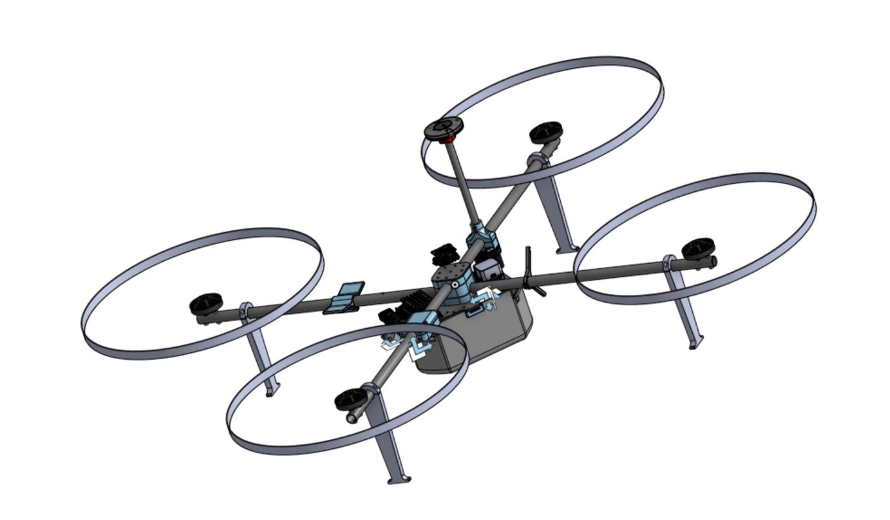
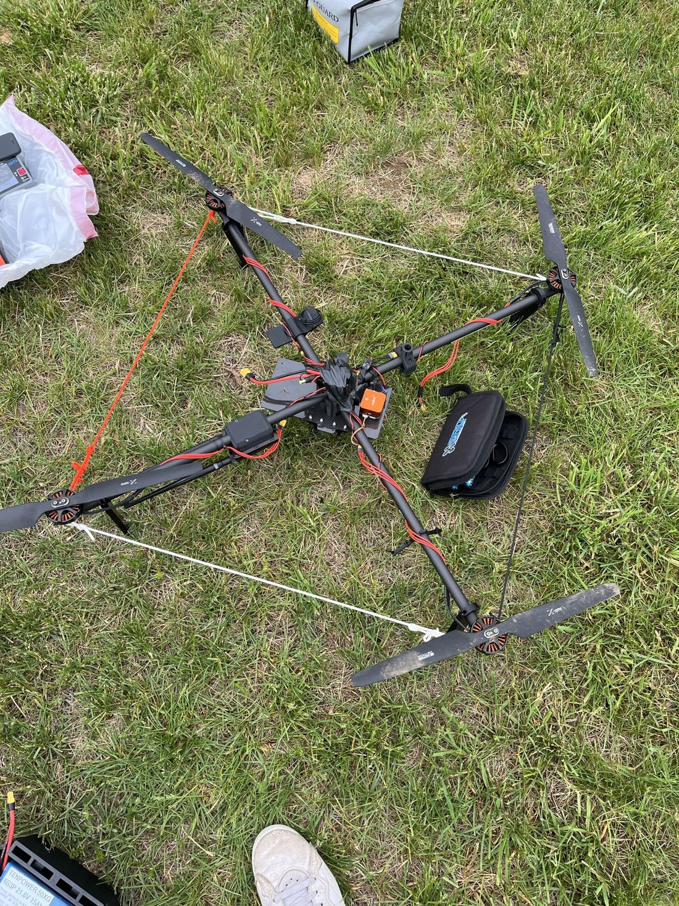
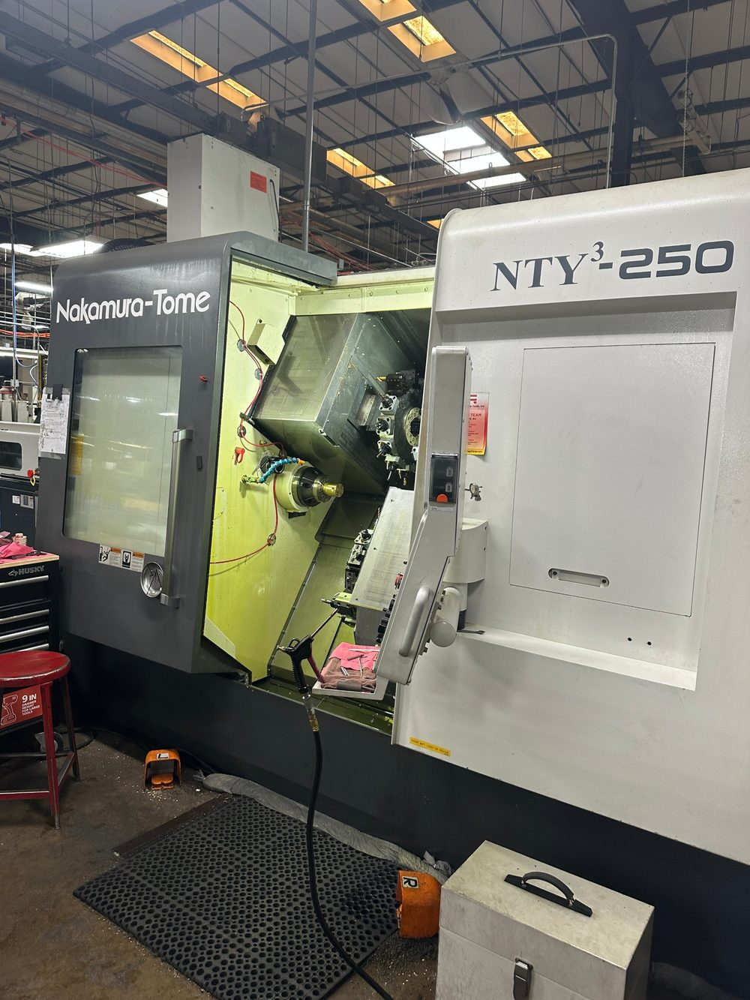

A competition drone I'm leading the mechanical design of, and a valve I designed and had machined.
Drover is the aerial scouting drone for Northeastern's entry in the University Rover Challenge, built by the drone subteam as a collaboration between AeroNU and the Mars Rover team. It flies ahead of the rover to scout the terrain, so the rover spends less of its limited mission time finding a route. This year the rules may also allow the drone to drop off a payload.
The constraint that shapes every decision: 5 kg maximum weight, and the drone must carry a dummy weight equal to the mass of its batteries. The airframe has to be extremely mass-efficient.
V4 is a quadcopter built on an X frame of two carbon fiber rods and a carbon fiber plate, with a large number of 3D-printed parts that hold the GPS antenna and the dummy weight.
My part was the cage for the dummy weight. An earlier version of the cage let the mass oscillate during flight. For V4 I designed the cage to a tight fit, so the weight is rigidly tied to the frame and has no room to move. V4 did not show the oscillation we saw before. I checked the fit by hand, shaking the assembled cage to confirm the mass stayed put.


For V5 we are being bold and moving off the quadcopter layout to a bicopter: two larger rotors instead of four smaller ones, going from 17.1 in to 24 in props. The goal is a more efficient airframe, so the same 5 kg limit can carry more battery and fly longer.
Total rotor area stays roughly the same as the quad, so bigger isn't automatically better, and we are testing it rather than assuming it. Props up to roughly 0.9 m per motor are possible, but they would need different motors and a different battery configuration. We have 24 in carbon fiber props on hand, so the next step is flight testing to see whether the cost of going larger is worth it.
The tradeoff is control: a bicopter is harder to stabilize than a standard multirotor. The project started as a coaxial helicopter proof of concept and evolved into the bicopter. I'm doing the mechanical CAD for V5 right now. It is not finished, so I'm not showing images of it.
During my summer internship at Controls Corporation of America I designed a master valve to replace one the company had been buying from an outside supplier. To understand how the purchased valve worked, I cut it open on a mill. Then I used what I learned to redesign it in SolidWorks as a part the shop could make in-house on a lathe.
I worked with machinists and the manufacturing engineering team to learn how parts are turned and milled, and designed the valve so it would be easy to make. Along the way I became very familiar with NPT (National Pipe Taper) thread standards. Company policy means I can't show the part, drawings, or specifications, so this section shows the equipment instead.
